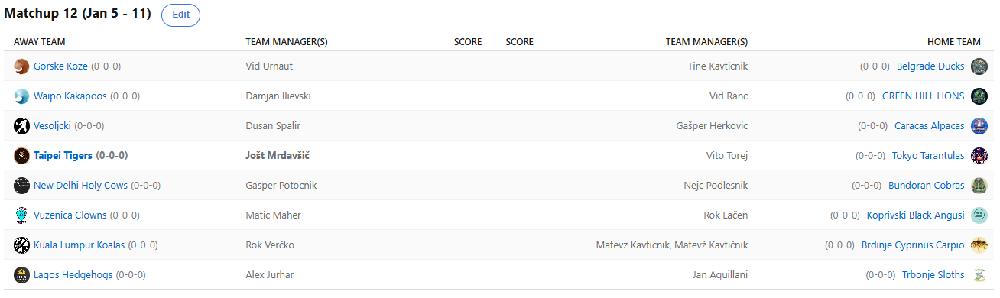

SEZONA 25/26
- Pravila in sistem tekmovanja
- Matchup1 (Oct 21 - Oct 26)
- Matchup2 (Oct 27 - Nov 2)
- Matchup3 (Nov 3 - Nov 9)
- Matchup4 (Nov 10 - Nov 16)
- Matchup5 (Nov 17 - Nov 23)
- Matchup6 (Nov 24 - Nov 30)
- Matchup7 (Dec 1 - Dec 7)
- Matchup8 (Dec 8 - Dec 14)
- Matchup9 (Dec 15 - Dec 21)
- Matchup10 (Dec 22 - Jan 28)
- Matchup11 (Dec 29 - Jan 4)
- Matchup12 (Jan 5 - Jan 11)
- Matchup13 (Jan 12 - Jan 18)
- Matchup14 (Jan 19 - Jan 25)
- Matchup15 (Jan 26 - Feb 1)
- Play-in (Feb 2 - Feb 22)
- Playoff 1 (Feb 23 - Mar 8)
- Playoff 2 (Mar 9 - Mar 22)
- Playoff 3 (Mar 23 - Apr 5)
2025/26 - Fantasy Koroška - sezona 9
MATCHUP 12 (Jan 5 - Jan 11)
Recap: MATCHUP 12
80% rednega dela je za nami in zdaj že res imamo zelo dobro predstavo o (ne)moči posameznih moštev. V tem tednu je bilo porabljenih 154$,
kar 56 le-teh že v ponedeljek.
Največ je že prvi dan potrošil Dule, ki je, kot se tudi spodobi, poskušal iztržiti kar se je le dalo, a žal tudi to ni bilo dovolj.
Dule tako ostaja pri dveh zmagah in po naprednih ESPN-ovih algoritmih mu zdaj ostaja le še skromnih 10% možnosti za uvrstitev v končnico.
Dule, ki mu prinesti gajbo na piknik sicer ni tuje, se bo za nameček pomeril še z vodilnim moštvom lige in pravi mali čudež potrebuje,
če se želi med 14 najboljših moštev še preriniti. Predzadnji žebelj v krsto mu je zabil Herko, ki se kot po navadi, tudi leto nahaja v
sami sredini lestvice. Bo svojo skupščino antipatikov uspel pripeljati višje kot lani, ko je z za svoje standarde skromnim 10. mestom
vsekakor razočaral širšo javnost?
Drugi s hektolitrom vode v grlu pa je naš Matteo. Njemu sicer razpored do konca rednega dela gre nekoliko bolj na roko, a vendarle bo potreboval 2 zmagi ob ugodnem
razpletu tudi ostalih matchupov, če se želi izvleči v končnico. Na njegovo srečo bo še edini preostali kandidat za izpad, G€P$, tudi njegov
nasprotnik. Toda zdaj ko je izgubil še AD-ja (AD zato, ker vsaj 1x na teden si samo rečeš »A Deeeeej že spet je poškodovan«), v njegovem
moštvu nekih resnih fantasy threatov še bolj primanjkuje. Sedež na zadnjem vlaku mu je ukradel Verčko, ki je imel končno nekaj več zdravih
igralcev in takoj je to zadoščalo, da si tako rekoč zagotovi končnico. Zdaj si lahko umirjeno poskuša še nekoliko izboljšati izhodišče,
preden se začne zares in upamo, da mu bo sreča bolj naklonjena kot v soboto zvečer s pocket kingi.
Tretji gajba kandidat pa je kot že rečeno Geps. Ta teden si je najbrž oddahnil od fantasyja pred zaključnimi borbami, že v ponedeljek je bilo namreč jasno da
nima za burek. Toda »pick your battles« pravijo in upamo, da je Gašper za boj pripravljen ta teden. Čaka ga namreč Kavt in v primeru zmage,
je mesto v končnici njegovo. Dvoboj bomo vsekakor podrobno spremljali, za razliko od tistega prejšnjega, ki ga je dobil Cicko s kar 500+
točkami razlike. Slednji je s porazom Vita zdaj 99% clinchal tudi 1. seed in 20€, a v teoriji še ne in počakajmo z razglasitvami do konca.
12. zaporedna zmaga permanentno zdravih Shrimpov in Nejc, ki bo resen fantasy obračun zdaj čakal še vsaj 40 dni, lahko le nadaljuje z
žrtvovanjem fantasy bogovom, da mu ta sreča ostane tudi za končnico.
Zanimivo je bilo v Taipeiju, kjer so gostovale Tarantele. Ves čas so v slogu Predinove žene dihali za ovratnik Tigersom, ki pa so vendarle z nekaj dobrimi signingi
in učinkovitimi predstavami odbili vse napade in zabeležili še 5. zaporedno zmago. Ritem je vsekakor pravi, forma se stopnjuje in s to zmago
v neposrednem obračunu #1 in #2 rangiranih managerjev v kategoriji WIN RATE, je Jole zdaj tam nekoliko povečal svojo prednost. Da je Vito
nekoliko po sreči tako visoko smo vedeli, zdaj pa je ta matchup to še dodatno potrdil. Vseeno se Vitu nasmiha BYE, razen če se mu res zalomi
in izgubi 2x v naslednjih 3 tednih. Tako nekako, kot se mu je zalomilo proti Nazarjam, še vedno ne vemo točno kako the fuck je to mogoče in
bi z veseljem slišali kakšno obrazložitev.
V sendviču obeh pravkar omenjenih managerjev pa se na lestvici nahaja Lačenovski. Spinmajster Voka se je najbrž bolj zašvical med sankanjem, kot pa v tem matchupov.
Na močne anguse niso imeli pravega odgovora Vuzeniški Klovni, ki so ponovno definicija povprečja. Če je Matičev cilj ne prinesti gajbe na piknik,
kar je bila v prejšnjih letih kar nekako praksa, pa mu bo to tokrat uspelo in mu na tej točki iskreno čestitamo. Vokija pa zdaj čaka neposredni
obračun za 3.mesto, ko bodo po Koprivni njegove Anguse preganjali vroči Tigri. #easywinforus
Po pričakovanjih je bil brez kakršnihkoli možnosti Tini Binki brez Jokiča. Še kar nekaj časa ga čaka tale struggle in k sreči je imel pred to poškodbo solidno izhodišče
in lahko v miru pričakuje povratek svojega, kot kaže, edinega sposobnega playerja. Tokrat se je sprehodil Urnaut, ki od trejda še naprej ne
pozna poraza in je letos lahko več kot zadovoljen s svojimi managerskimi manevri. Lahko lansko drugo mesto še nadgradi? Težka.
Nič kaj zanimivo ni bilo v sophomorskem obračunu med Ilijo in Ranacom. Častni član zasedbe A-JE-TO, Vid, je tudi tokrat bil brez pravih možnosti. Je Reaves res
tako pomemben za zasedbo Lionsov? Zgolj 829 točk in gladek poraz, ki je že šesti po vrsti in zelo hitro je šel od top3 ekipe na izjemno
skromno 9. mesto. Skrajni čas je, da si opomore in k sreči ga zdaj čaka »AJETO« derbi proti Tinki Binkiju. Novo zmago je vpisal Ilja s
svojimi Kakapoji. Poleg tega je poharal še predictione, ko je zadel vse bonuse in si tako prislužil procent. Vsekakor v primerjavi z lansko,
zelo uspešna sezona za Damjana, ki je s 50% recordom zdaj rutinirano na sredini lestvice in lahko iz zasede napada tudi najvišja mesta.
Ostal nam je le še obračun titanov zgodovine, ki sta s 7 podium točkami celo na samem vrhu. Tokrat je krajšo potegnil Aleks, ki je kljub nekaj izostankom in
trejdu Traeja Younga v ekipo kjer kariere umirajo, uspel nuditi več kot dostojen odpor. Na koncu je v tem high-scoring matchupu zmago vendarle
domov odpeljal Kups. Jan, ki je vsekakor eden izmed nevarnejših v tej sezoni, je v osmih krogih zmagal kar 7x, edini poraz pa je bil nohtogrizni
obračun z vodilnim Cickom. Zdaj ga čaka obračun z bestičem Maherjem, preden dobi po pički od Joleta in tako si za Kupsa zanimivi matchupi
kar sledijo eden za drugim.
V tem tednu nas čaka nekaj tako ali drugače zelo zanimivih matchupov. Rezultatsko bo najbolj pester dvoboj med Kavtom in Gepsom, ko si lahko upanje za končnico
podaljša Matevž. Derbi dravske doline med Kupsom in Maherjem, kot tudi avspuharski obračun AJETO-jev smo že omenjali, a sta to derbija
zgolj poimensko, veliko oči pa bo uprtih tudi v neposreden obračun za 3. mesto na lestvici med Vokijem in Joletom. Napeta obračuna si
obetamo tudi med Herkom in Urnautom in sophomorskem obračunu Vita in Damjana, med tem ko si želimo sukanja gobčkov v vedno zanimivem
clashu med Aleksom in Veratijem.
Srečno vsem in ne pozabite na predictione. LP
Best memes